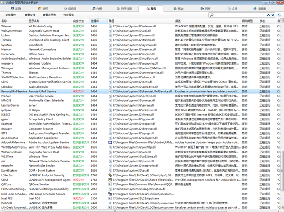

第6篇：挖矿病毒（二）
0x00 前言
作为一个运维工程师，而非一个专业的病毒分析工程师，遇到了比较复杂的病毒怎么办？别怕，虽然对二进制不熟，但是依靠系统运维的经验，我们可以用自己的方式来解决它。
0x01 感染现象
1、向大量远程IP的445端口发送请求

2、使用各种杀毒软件查杀无果，虽然能识别出在C:\Windows\NerworkDistribution中发现异常文件，但即使删除NerworkDistribution后，每次重启又会再次生成。

连杀软清除不了的病毒，只能手工来吧，个人比较偏好火绒，界面比较简洁，功能也挺好用的，自带的火绒剑是安全分析利器。于是安装了火绒，有了如下分析排查过程。
0x02 事件分析
A、网络链接
通过现象，找到对外发送请求的进程ID：4960

B、进程分析
进一步通过进程ID找到相关联的进程，父进程为1464

找到进程ID为1464的服务项，逐一排查，我们发现服务项RemoteUPnPService存在异常。

C、删除服务
选择可疑服务项，右键属性，停止服务，启动类型：禁止。

停止并禁用服务，再清除NerworkDistribution目录后，重启计算机。异常请求和目录的现象消失。
又排查了几台，现象一致，就是服务项的名称有点变化。

D、病毒清除
挖矿病毒清除过程如下：
1、 停止并禁用可疑的服务项，服务项的名称会变，但描述是不变的，根据描述可快速找到可疑服务项。
可疑服务项描述：Enables a common interface and object model for the Remote UPnP Service to access
删除服务项：Sc delete RemoteUPnPService
2、 删除C:\Windows\NerworkDistribution目录
3、 重启计算机
4、 使用杀毒软件全盘查杀
5、 到微软官方网站下载对应操作系统补丁，下载链接：
https://docs.microsoft.com/zh-cn/security-updates/securitybulletins/2017/ms17-010
0x03 后记
在查询了大量资料后，找到了一篇在2018年2月有关该病毒的报告：
NrsMiner：一个构造精密的挖矿僵尸网络
https://www.freebuf.com/articles/system/162874.html
根据文章提示，这个病毒的构造非常的复杂，主控模块作为服务“Hyper-VAccess Protection Agent Service”的ServiceDll存在。但与目前处理的情况有所不同，该病毒疑似是升级了。